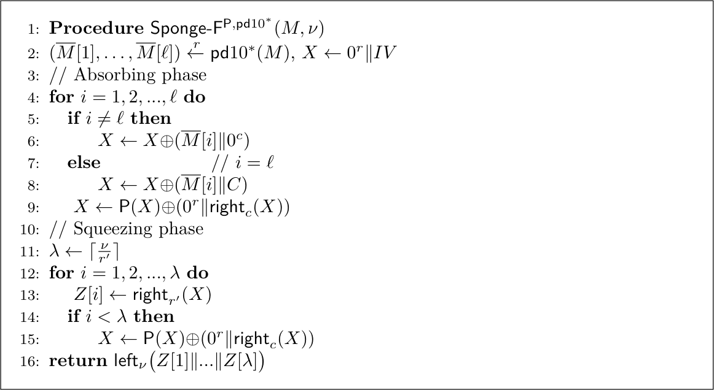
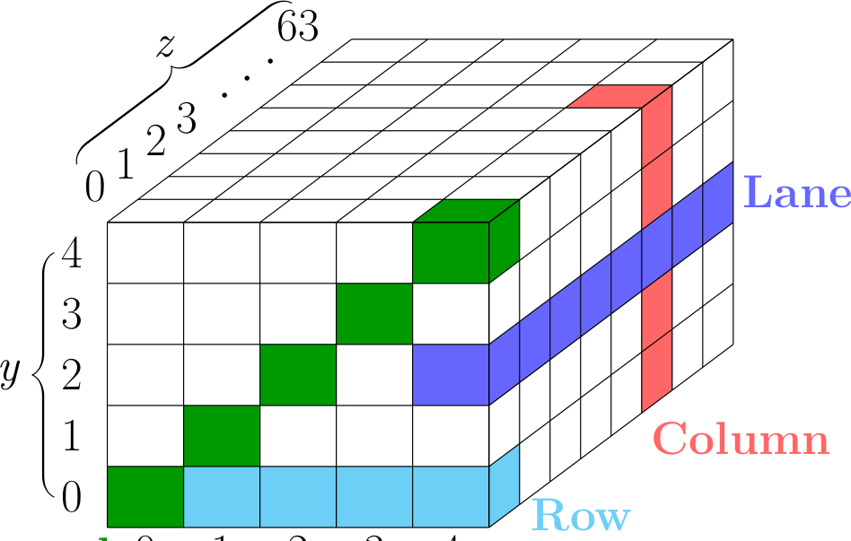
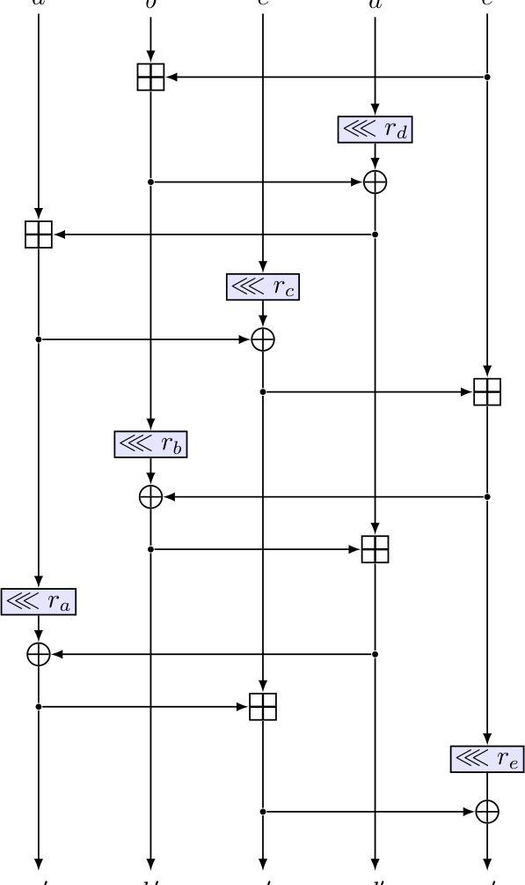
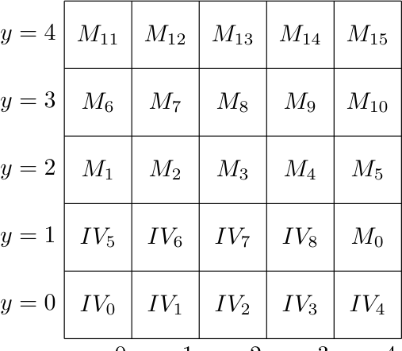

规范Dragon 杂凑家族 — 参数、模式、置换
权威来源：hash-07-spec.pdf
（42 页，英文；§2.4 置换、§2.5 hash 实例化、§2.6 XOF、§2.7 安全声明）。ngcc.dev 整理的逐行算法笔记
（含完整 pseudocode）保存在 pseudocode.md。
本页数字均对照 spec 的 LaTeX 源（2026-10-31）核验。
参数（spec Tables 4 与 6）
| 参数 | Dragon-512 | Dragon-768 | Dragon-1024 | XOF-256 | XOF-384 | XOF-512 |
|---|---|---|---|---|---|---|
| 状态宽度 b | 1600 | 1600 | 1600 | 1600 | 1600 | 1600 |
| capacity c | 576 | 832 | 1088 | 576 | 832 | 1088 |
| absorb rate r | 1024 | 768 | 512 | 1024 | 768 | 512 |
| squeeze rate r′ | —（直读 h） | — | — | 1280 | 1152 | 1024 |
| 轮数 | 16 | 16 | 16 | 16 | 16 | 16 |
| digest（spec） | 512 | 768 | 1024 | ν（任意） | ν（任意） | ν（任意） |
| collision 目标 | 256 | 384 | 512 | — | — | — |
| preimage 目标 | 512 | 768 | 1024 | — | — | — |
| generic log₂Q 目标 | — | — | — | 256 | 384 | 512 |
均以 bit 计。消息长度上限 2⁶⁴ bit（§2.7）。
Dragon-XOF-256/384/512 中的数字是安全等级
（log₂Q，spec Table 6），不是输出长度。一次性 API 报告的是一个 squeeze block——
1280 / 1152 / 1024 bit（160 / 144 / 128 字节）——所以 XOF-256 的固定 digest 反而比
XOF-512 更长。实现本身支持任意 ν。模式：sponge-forward（spec Fig. 1）
在普通 sponge 上，把置换前状态的 inner（capacity）部分保存，置换后 XOR 回 inner 部分。
这一前馈把 (second-)preimage 安全性从经典的 c/2 提升到 ≈ min{c, h}（ideal-permutation 模型下），因此 1600-bit 状态足以支撑
1024-bit preimage 目标。padding 为 pd10*；domain constant C 被 XOR 进最后一个块
（lane S[0,0] 的最低位）。模式及其安全分析来自 Guo, Hu, Jiang, Fan, Fu, Preneel, Wang
（ePrint 2025/1006，发表于 CRYPTO 2026）。

Sponge-F^{P,pd10*}(M, nu):
(M[1..L]) <- split_r( pd10*(M) )
X <- 0^r || IV
for i = 1..L: # absorb
X <- X XOR (M[i] || (i==L ? C : 0))
X <- P(X) XOR (0^r || right_c(X)) # 前馈
for i = 1..ceil(nu/r'): # squeeze
Z[i] <- right_{r'}(X)
if i < last: X <- P(X) XOR (0^r || right_c(X))
return left_nu(Z[1] || ... )置换 Dragon-p（spec §2.4）
16 轮，R_i = φ ∘ ι_i：ι 向 S[0,0] XOR 一个轮常数
（RC_i 按 i·15+15 规律：0x0F, 0x1E, …, 0xF0）；φ = Col ∘ Diag 先对 5×5 lane 阵列的
五条对角线、再对五条列各做一次 ARX 映射 Update。Update 由 mod 2⁶⁴ 模加与
(1, 10, 24, 33, 49) bit 的 rotations 组成。

Update(a,b,c,d,e): # + 为 mod 2^64, <<< 为 rotl
b += e ; d = (d <<< 33) ^ b
a += d ; c = (c <<< 24) ^ a
e += c ; b = (b <<< 10) ^ e
d += b ; a = (a <<< 1) ^ d
c += a ; e = (e <<< 49) ^ c

轮常数 RCi（spec Table 3）
| i | RCi | i | RCi |
|---|---|---|---|
| 0 | 0x000000000000000F | 8 | 0x0000000000000087 |
| 1 | 0x000000000000001E | 9 | 0x0000000000000096 |
| 2 | 0x000000000000002D | 10 | 0x00000000000000A5 |
| 3 | 0x000000000000003C | 11 | 0x00000000000000B4 |
| 4 | 0x000000000000004B | 12 | 0x00000000000000C3 |
| 5 | 0x000000000000005A | 13 | 0x00000000000000D2 |
| 6 | 0x0000000000000069 | 14 | 0x00000000000000E1 |
| 7 | 0x0000000000000078 | 15 | 0x00000000000000F0 |
文件
- 规范：
hash-07-spec.pdf - 算法笔记 + 完整 pseudocode + 实现核对：
pseudocode.md - 官方提交包
Dragon.zip— 下载与校验 （SHA-25608875981…b26c，见 SHA256SUMS.txt）